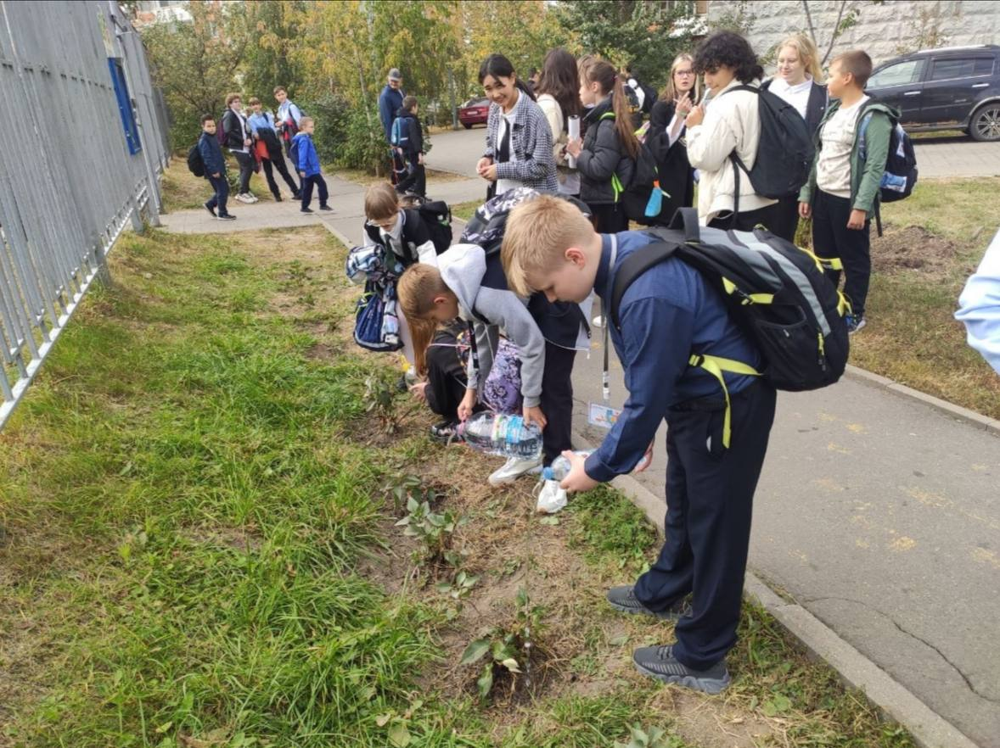

Наша школа активно участвует в волонтёрской деятельности и заботится об окружающей среде. Одно из важных направлений нашей работы — озеленение района 🌱
Ученики и учителя школы №2051 принимают участие в посадке деревьев и кустарников, уходе за клумбами, уборке и благоустройстве общественных территорий.
Такие мероприятия помогают сделать наш район чище, уютнее и красивее, а также воспитывают ответственное отношение к природе.
Мы приглашаем всех желающих присоединиться к нашей волонтёрской команде!
Участие в озеленении — это возможность внести реальный вклад в улучшение окружающей среды, поработать в дружной команде и провести время с пользой.
Цель — создать комфортные, функциональные и визуально привлекательные пространства для отдыха, прогулок, спорта и общения.
📍 Место сбора:
[территория школы / школьный двор / центральный вход в школу]
🕘 Время и даты проведения:
[указать]